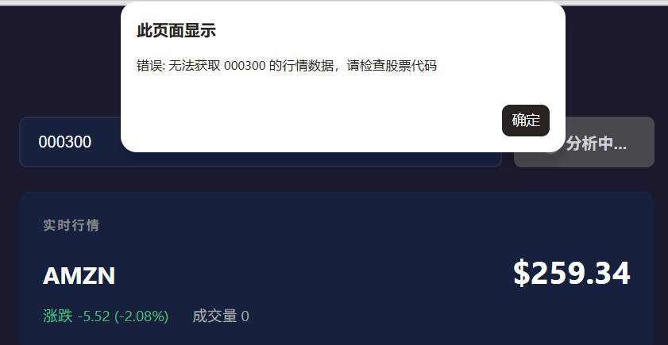
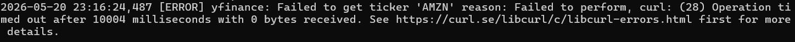

交付日期：2026-05-21 | 框架：FastAPI + Vanilla JS | 部署：Render.com
主应用地址（可直接使用）：
本文档地址（即当前页面）：
| 层级 | 前端 |
|---|---|
| 技术 | HTML5 + CSS3 + Vanilla JavaScript (ES6+) |
| 图表库 | Lightweight Charts v4.1.3 (TradingView 出品) |
| 部署方式 | FastAPI StaticFiles 托管前端静态资源，前后端一体部署 |
| 层级 | 后端 |
|---|---|
| 框架 | Python FastAPI (异步) |
| HTTP 客户端 | httpx (异步请求 Finnhub / Twelve Data API) |
| 数据缓存 | 自定义 TTL 缓存 (yf_cache)，减少重复 API 调用 |
| 速率控制 | 自定义 yfinance 节流器 (yf_throttle)，避免 API 限流 |
| 层级 | 数据源 |
|---|---|
| 美股行情 | Twelve Data（主）→ yfinance（备1）→ Finnhub（备2），三级降级 |
| A股行情 | 新浪财经 API (hq.sinajs.cn)，自动识别 6 位代码 |
| K线数据 | yfinance (美股) / 新浪财经日线接口 (A股) |
| 层级 | AI 分析 |
|---|---|
| LLM | DeepSeek Chat API (deepseek-chat 模型) |
| SDK | OpenAI Python SDK (兼容 DeepSeek API 格式) |
| JSON 保障 | response_format: json_object + temperature=0.3 + 4层容错机制 |
| 层级 | 数据存储 |
|---|---|
| 数据库 | Supabase (PostgreSQL) |
| SDK | supabase-py 官方客户端 |
| 表结构 | analyses (symbol, price, change_percent, market, summary, sentiment, risk_level, created_at) |
| 层级 | 部署 |
|---|---|
| 平台 | Render.com (Web Service, plan:free) |
| 启动命令 | uvicorn backend.main:app --host 0.0.0.0 --port $PORT |
| Python | 3.13 |
核心策略：System Prompt 严格约束输出格式 + response_format={"type": "json_object"} + temperature=0.3 + 4层容错机制。
SYSTEM_PROMPT = '''你是一个专业的股票分析师。用户会提供股票的实时行情数据（价格、涨跌幅、成交量），可能还会附带 K 线历史数据的技术指标摘要。 请严格按以下 JSON 格式返回分析结果，不要包含任何其他文字、解释或 Markdown 标记： { "summary": "用1-5句中文总结该股票当前的技术面表现和短期走势判断（200字以内）", "sentiment": "Bullish 或 Neutral 或 Bearish", "risk_level": "Low Risk 或 Medium Risk 或 High Risk" } 规则： - sentiment 只能是 Bullish、Neutral、Bearish 之一 - risk_level 只能是 Low Risk、Medium Risk、High Risk 之一 - 只返回 JSON 对象，不要用代码块包裹，不要有任何前缀或后缀文字 - 所有字段都必须有值，不能为空字符串 - 如果提供了 K 线技术指标，请在 summary 中结合均线、近期趋势、支撑压力位等信息进行综合判断'''
response = await _get_client().chat.completions.create( model="deepseek-chat", messages=[ {"role": "system", "content": SYSTEM_PROMPT}, {"role": "user", "content": user_message}, ], temperature=0.3, // 低温度 = 输出更稳定 response_format={"type": "json_object"}, // 强制 JSON 模式 )
// Layer 1: 直接 JSON 解析 try: result = json.loads(content) return _validate_and_return(result) except json.JSONDecodeError: // Layer 2: 正则暴力提取 { ... } match = re.search(r'\{.*\}', content, re.DOTALL) if match: result = json.loads(match.group()) return _validate_and_return(result) // Layer 3: 失败自动重试（最多2次，共3次机会） if retry < 2: return await analyze_stock(stock_data, retry + 1) // Layer 4: 最终降级 JSON，保证前端不崩溃 return { "summary": "AI 分析暂时不可用", "sentiment": "Neutral", "risk_level": "Medium Risk", }
现象：DeepSeek 偶尔在 JSON 前加 "好的，以下是分析结果：" 等前缀文字，导致 json.loads() 直接失败。
现象：输入 000001（平安银行），后端返回 404："Cannot get quote for 000001, check the ticker"。

现象：查询美股（如 AMZN）时，行情卡片中成交量始终显示 "Volume: 0" 或直接报错无法获取数据，但股价、涨跌幅等其他数据正常。

stock-ai-dashboard/ ├── backend/ │ ├── main.py # FastAPI 入口 + CORS + StaticFiles │ ├── config.py # 环境变量加载 │ ├── routers/ │ │ ├── stock.py # GET /api/stock/:symbol │ │ ├── candles.py # GET /api/candles/:symbol │ │ └── analysis.py # POST /api/analyze + GET /api/history │ ├── services/ │ │ ├── stock_service.py # 美股三级降级 + A股分流 │ │ ├── china_stock_service.py # 新浪财经A股行情 │ │ ├── twelve_data_service.py # Twelve Data API │ │ ├── candle_service.py # K线数据获取 │ │ ├── llm_service.py # DeepSeek AI 分析 + 4层容错 │ │ ├── supabase_service.py # Supabase 存储/查询 │ │ └── cache.py # TTL 缓存 + 节流器 │ └── models/ │ └── schemas.py # Pydantic 数据模型 ├── frontend/ │ ├── index.html # 主应用页面 │ ├── interview.html # 面试交付文档（本页） │ ├── style.css # 样式表 │ └── app.js # 前端逻辑（API调用 + 图表渲染） ├── render.yaml # Render 部署配置 ├── requirements.txt # Python 依赖 └── README.md
| 变量名 | 说明 |
|---|---|
| FINNHUB_API_KEY | Finnhub 免费 API Key（美股备选数据源） |
| TWELVE_DATA_API_KEY | Twelve Data API Key（美股首选数据源） |
| DEEPSEEK_API_KEY | DeepSeek API Key（AI 分析） |
| SUPABASE_URL | Supabase 项目 URL |
| SUPABASE_KEY | Supabase anon/public key |